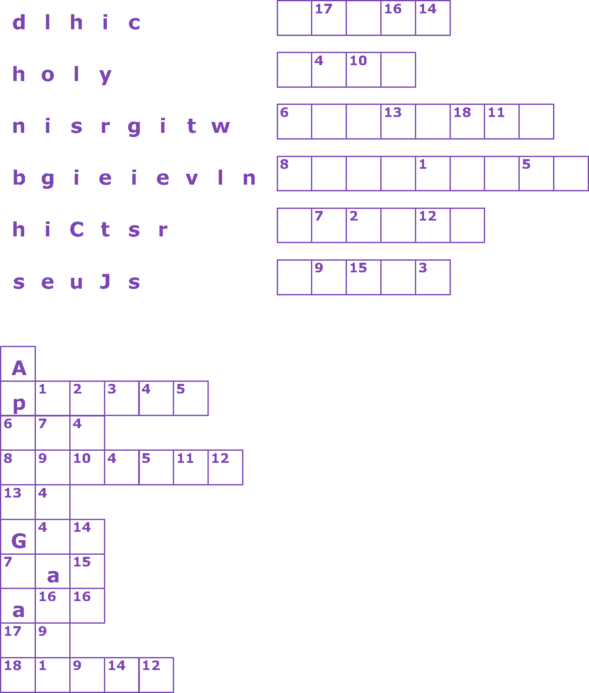

This Week: Jeremiah 31:27-34 and Psalm 119:97-104 or Genesis 32:22-31 and Psalm 121, 2 Timothy 3:14-4:5, Luke 18:1-8
Elementary School Pew-work
From the time you were a child you knew the holy writings. They showed you how to be saved by believing in Christ Jesus. All that is written comes from the Spirit of God and is good for these things: to teach people, to show them when they are wrong, to make them see what is right, to teach them to do what is right. In this way a person who belongs to God has all he needs. He is ready for every kind of good work.
|
1.
When did Timothy learn about the holy
writings? 2.
What do the holy writings
show? 3.
What are they good
for? |
 |
Next
Week: Joel
2:23-32 and Psalm
65 or [Sirach
35:12-17 or Jeremiah
14:7-10, 19-22] and Psalm
84:1-7, 2
Timothy 4:6-8, 16-18, Luke
18:9-14
This Week: Jeremiah 31:27-34 and Psalm 119:97-104 or Genesis 32:22-31 and Psalm 121, 2 Timothy 3:14-4:5, Luke 18:1-8
Middle-School Pew-work
|
Is
God's law written in your heart and if it is, how can you “read”
it? Would
you rather have a written law to follow, or have to look in your
heart?
Why? |
Next Week: Joel 2:23-32 and Psalm 65 or [Sirach 35:12-17 or Jeremiah 14:7-10, 19-22] and Psalm 84:1-7, 2 Timothy 4:6-8, 16-18, Luke 18:9-14